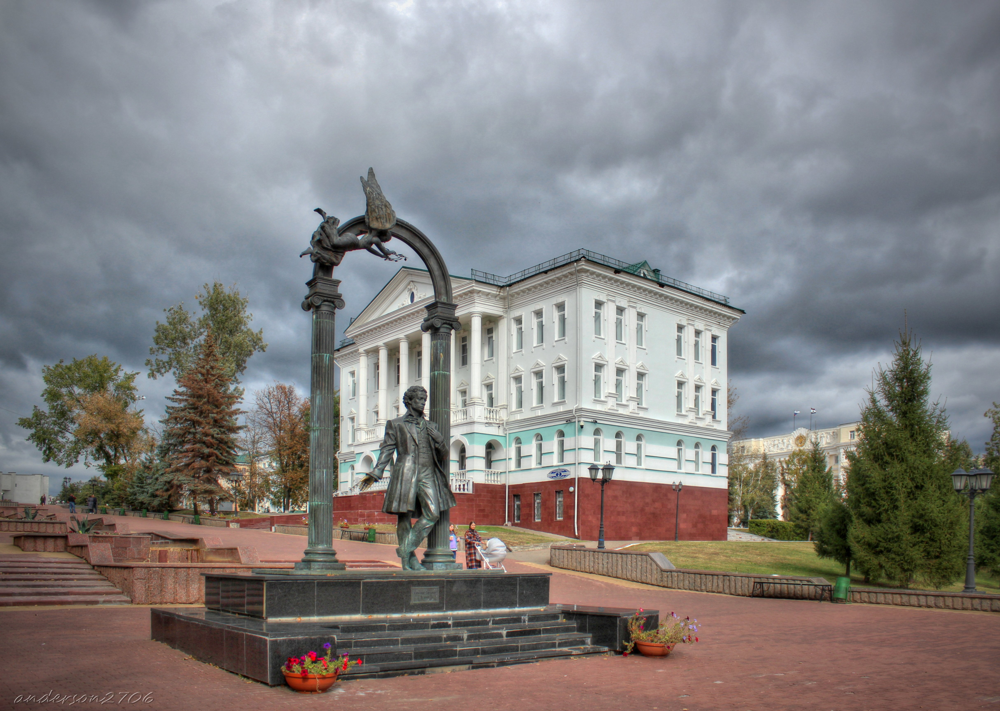

Пушкин
В 2001 году в Саранске установлен памятник «Пушкин и муза», ставший одной из достопримечательностей столицы Мордовии. Местоположение скульптурной композиции очень символично. Она находится на фонтанном спуске к центральному Парку культуры и отдыха имени А. С. Пушкина, который был основан в городе в год столетнего юбилея со дня рождения поэта.
Первоначально планировалось установить монумент в парке, сто лет носящем имя Пушкина. В последний момент решили вынести пушкинский монумент за пределы парка и установить его на Московском спуске. Каскад фонтанов был идеальным местом для размещения декоративной скульптуры, но для скульптурного памятника здесь не хватало большой площадки.
На прямоугольном постаменте со ступеньками установлен узнаваемый силуэт молодого поэта, который вписан в изящную арку с парящей музой. Легкий наклон головы и непринужденная поза великого поэта выражают благородный и высокопоэтический образ. Гений входит через врата в открытое пространство и всматривается в беспредельный мир. Рука немного отодвинута назад в приглашающем жесте. Создается впечатление, что поэт приглашает зайти в его скромные владения и очутиться в мире его произведений. Муза, витающая над арочным сводом, венчает лаврами бронзовый силуэт поэта.